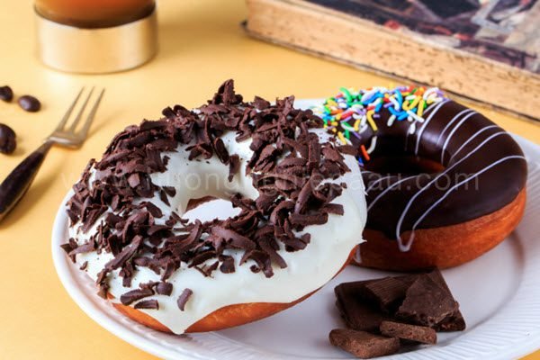

Knowing how to link your code to other document important
absolute references(something called external links) connect to pages in other domains. In the href attributes of the tag full URL of the page, image, or tother resource you would like to link to is specified. one example might be your quest to lis some of the greatest bakeries of all time. Since you want to link to the bakeries themselves and not files you wrote, you would use an absolute reference.
cofee houseAn advantage of absolute references is that you are always linked to themost up to-dare information on that page. A disadvantage is that is it up to you to make sure that the links don't change
relative refernces (somtimes called internal linls connect to pages in other domains. in the href attributes of the tag only the folder(if any) and filename is specified.some examples of when you might use relative references would be in your navigation bar or links to your images
Donut CakeMore and more people are moving away from textual prompts to ones that are graphics based. This is because the page looks "nices". I can redo the link above using a picture instead of words.
Every tag can have an id attributes. The id attributes gives a name to a specific sectionof the DOM. You can use that id to link directly to a part of a page instead of just a page in gerneral. This is a great way to allow people to quickly jump from one part of your page to the specific section you are looking for. Review the material on:
Absolute Referenceswhen you click on any of the links above, the browser will bring that section into focus. Itmay be the case that the bottom two links don't do anything for you. That is beacause this content is alreadu in your screen.
**Don't forget that you can choose"view source" to see the code I used to create these links